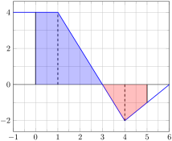

Section Section 7.7: Functions Defined by Integrals
Subsection Functions Defined By Integrals
The Fundamental Theorem of Calculus was based on the idea of a function defined by an integral:
\begin{equation*}
A(x) = \int_c^x f(z) \, dz.
\end{equation*}
As long as \(f(x)\) is continuous, the FTC tells us that \(A(x)\) is differentiable and that \(A'(x)= f(x)\text{.}\)
What are these functions? They are called accumulation functions.
Subsection Accumulation of Change
Recall that the derivative is a function that gives us a rate of change.
When we multiply a rate of change times an increment of time, we get an increment of change. A definite integral is effectively adding increments of change, and so it gives us the total accumulated change over the interval in question.
Example: If \(v(t) = t(4-t)\) represents the velocity of an object (meters per second) as a function of time \(t\) (seconds), how far does the object move from \(t=0\) to \(t=4\text{?}\)
\(\displaystyle \int_0^4 v(t) \, dt\)
Subsection Example of Volume
A tank of water has 20 liters of water at time \(t=0\) (minutes). The function illustrated represents the rate of change for the volume (in liters per minute) as a function of time \(t\text{.}\) How much water is in the tank at \(t=5\text{?}\)

Subsection Accumulation Functions
An accumulation function \(\displaystyle A(x) = \int_c^x f(t) \, dt\) therefore has a literal interpretation as the function that accumulates the amount of change in a quantity whose rate is given by \(f(t)\) going from \(t=c\) to \(t=x\text{.}\)
As long as \(f(t)\) is continuous, any definite integral of \(f\) can be written be written as the change in accumulation:
\begin{equation*}
\int_a^b f(t) \, dt = A(b) - A(a).
\end{equation*}
(That doesn’t even require the FTC because of how \(A\) is defined.)
Subsection Derivatives of Integrals with Variable Limits
We can define more complicated functions by integrating from and to endpoints that depend on the variable:
\begin{equation*}
G(x) = \int_{u(x)}^{w(x)} f(t) \, dt
\end{equation*}
We rewrite this in terms of \(A\) and discover we are just using composition:
\begin{equation*}
G(x) = A(w(x)) - A(u(x))
\end{equation*}
Thus we can calculate the derivative using the chain rule:
\begin{equation*}
G'(x) = A'(w(x)) \cdot w'(x) - A'(u(x)) \cdot u'(x)
\end{equation*}
But the FTC guarantees \(A'(x) = f(x)\) so that we actually get:
\begin{equation*}
G'(x) = f(w(x)) \cdot w'(x) - f(u(x)) \cdot u'(x)
\end{equation*}
Subsection Practice
For each of the following, first rewrite the definite integral in terms of an accumulation function, then use the FTC and the chain rule to find the requested derivative.
-
\(\displaystyle \displaystyle \frac{d}{dx} \int_2^{x^2} t e^{-t} \, dt\)
-
\(\displaystyle \displaystyle \frac{d}{dx} \int_{x}^{x^2} \frac{t}{t^3+1} \, dt\)